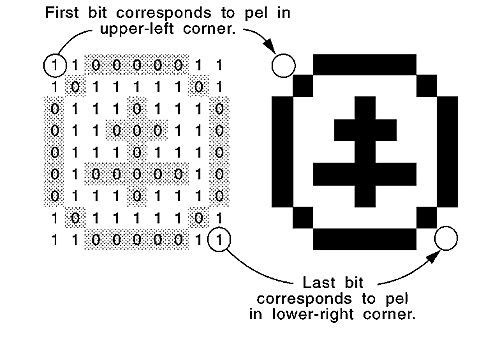

GpiImage draws a nonstandard, monochrome (two-color) bit map called an image primitive. The bit-map bits in an image are stored in the opposite order from the bits in a standard bit map-the first bit in the bit map corresponds to the pel in the upper-left corner of the bit-map image, and the last bit in the bit map corresponds to the pel in the lower-right corner of the bit-map image. The following figure shows the correspondence between the bits in an image primitive and the pels in the drawing produced by GpiImage.

Image-Primitive Bits and Pels
A call to GpiImage also is valid only in draw mode (DM_DRAW), but can provide output to a screen or printer. An application cannot scale bit-map images by using GpiImage.